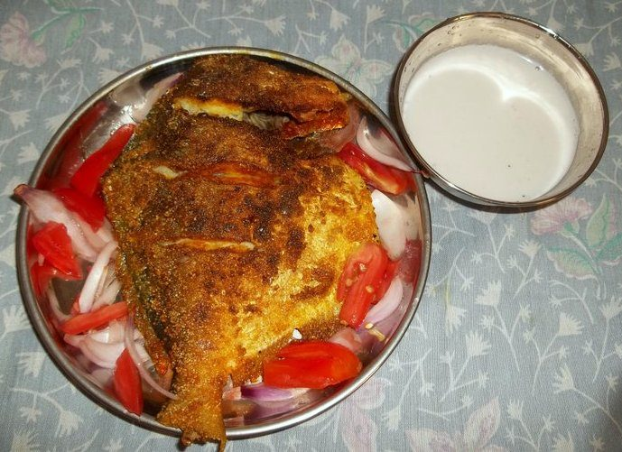

Contains: mustard
Ingredients
Quantities for 4.
- 12 dried petals Kokumthe souring fruit that gives solkadhi its colour
- 1.5 cups grated fresh Coconutor 400ml tinned coconut milk, thinned
- 600ml warm, for extracting the coconut Water
- 3 cloves Garlic
- 1, deseeded Green Chilli
- 1/2 tsp Cumin Seeds
- 1 tsp Coconut Oilfor the optional temperingoptional
- 1/4 tsp Mustard Seedsoptional
- 6 Curry Leavesoptional
- 1 tbsp, chopped Coriander Leavesoptional
- 1/4 tsp Sugaronly if the kokum is very sharpoptional
- to taste Salt
Cookware
stovetop, blender
Checked against the ingredient list for ten allergens: milk, egg, fish, crustaceans, tree nuts, peanuts, sesame, mustard, soy and gluten. Brands vary, so read the label on anything new to you.
Before you start
- Soak the kokum petals in 200ml warm water for 30 minutes, then squeeze them out. The soaking liquid is the drink; do not throw it away.
- Grind and strain the coconut ahead and chill it. Solkadhi is served cool, never cold from the freezer and never warm.
- Taste your kokum first. Some batches are salted and some are sharply sour, and both change how much you add.
Method
- Grind the coconut with 400ml of the warm water for 3 minutes, then strain through muslin, squeezing hard. This is the thick first extraction.
- Return the pressed coconut to the blender with the remaining 200ml water, grind again and strain into the same bowl.The second pressing carries most of the volume. Skipping it gives you a claggy drink rather than a light one.
- Crush the garlic, green chilli and cumin to a rough paste in a mortar.Pound rather than blend. You want the garlic to perfume the drink, not to dominate it.
- Stir the crushed paste and the squeezed kokum water into the coconut milk. It should turn a soft rose pink.
- Season with salt, and a pinch of sugar only if it tastes harsh. Rest 20 minutes for the colour to deepen and the garlic to bloom.
- For the optional tempering, heat the coconut oil, pop the mustard seeds, throw in the curry leaves and pour it over the top.
- Chill 30 minutes and stir well before serving, in glasses on their own or ladled over hot rice.
Storage
Keeps 2 days refrigerated in a covered jug; stir before pouring as it separates. Do not heat it. Coconut milk splits and the drink goes grainy.
Nutrition Low estimate
Low protein: 2 g a serving, 5% of the calories
| Per serving196 g | Per 100 g | |
|---|---|---|
| Calories | 139 kcal | 72 kcal |
| Protein | 1.6 g | 1 g |
| Carbohydrate | 9.9 g | 5 g |
| of which sugars | 4.6 g | 2 g |
| Fibre | 3.3 g | 2 g |
| Fat | 11.4 g | 6 g |
| of which saturated | 9.9 g | 5 g |
| of which unsaturated | 0.8 g | 0 g |
Whey poured away when the milk is curdled means much of the weighed input is never eaten, so the real figures are likely lower. Nearest database match used for curry leaves, kokum. Nothing here is cooked, so the serving weight counts the water in the glass. Estimated from raw ingredients using USDA FoodData Central.
More like this: Quick Indian recipes (30 min) · Vegan Indian recipes · Vegetarian Indian recipes · Gluten-free Indian recipes · Dairy-free Indian recipes · Goan recipes
Times, yields, allergens and nutrition are guidance. Use your own judgement on doneness and on storing. More in About.